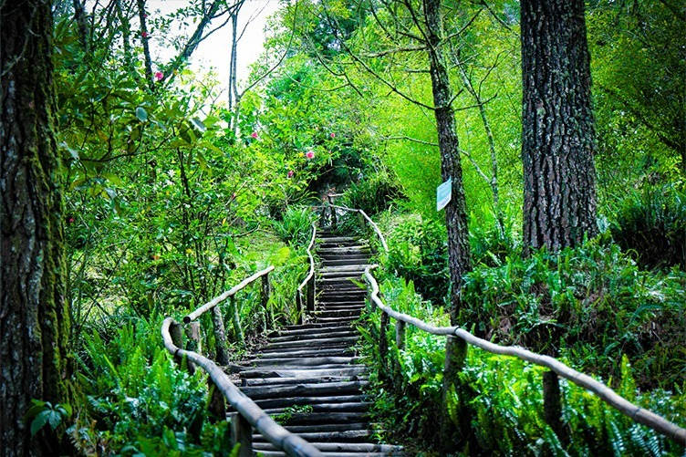

La Puerta del Diablo, ubicada en Panchimalco, El Salvador,
es una icónica formación rocosas de dos peñascos imponentes que crean un arco natural,
ofreciendo vistas panorámicas del océano Pacífico,
el lago de Ilopango y el volcán de San Vicente

El Boquerón
Área natural protegida ubicada en el cráter del volcán de San Salvador.
Ofrece senderos señalizados y miradores con vistas panorámicas de la capital.